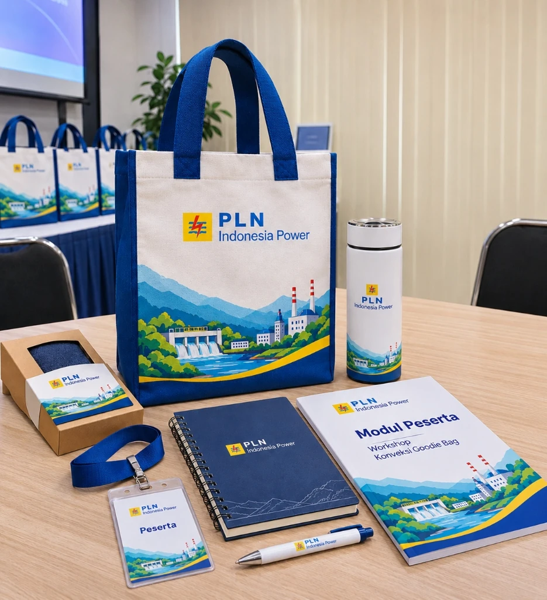

Goodie Bag untuk Instansi Pemerintah dan Kegiatan Dinas

Goodie bag untuk instansi pemerintah dan kegiatan dinas harus memenuhi dua pilar utama: kualitas fisik tas yang tahan menampung modul kedinasan, serta kepatuhan penuh terhadap tata kelola administrasi pengadaan barang dan jasa pemerintah (PBJP).
Kegiatan kementerian, lembaga negara, dan dinas pemerintah daerah—seperti bimbingan teknis (bimtek), sosialisasi undang-undang, studi banding, maupun diklat kepemimpinan aparatur sipil negara (ASN)—memiliki standar pengawasan yang ketat dari inspektorat dan Badan Pemeriksa Keuangan (BPK). Kesalahan spesifikasi atau ketiadaan dokumen perpajakan resmi dapat menjadi temuan audit administrasi.
📌 Ringkasan Inti Goodie Bag Instansi Pemerintah & Dinas:
- Pengadaan suvenir kedinasan terikat pada regulasi pengadaan barang/jasa pemerintah (Perpres PBJ) dengan pertanggungjawaban anggaran yang akuntabel.
- Dokumen KAK tender wajib merinci gramasi kain non-woven atau tenun murni, toleransi jahit ± 0,5 cm, dan metode bordir/sablon ramah lingkungan.
- Reproduksi lambang negara (Garuda Pancasila) dan logo kementerian/pemda wajib mengikuti pedoman tata letak resmi tanpa distorsi grafis.
- Penyedia konveksi wajib memiliki kelengkapan legalitas perpajakan: NPWP, PKP aktif, NIB berbasis risiko, serta penerbitan e-Faktur dan BAST resmi.
- Garansi penggantian 100% untuk produk cacat jahitan melindungi Pejabat Pembuat Komitmen (PPK) dari temuan audit inspektorat maupun BPK.
🚚 Ketentuan Layanan & Pengiriman: Produksi langsung dari workshop konveksi kami di Kota Malang, melayani pengiriman kilat ke seluruh 38 provinsi di Indonesia (Jawa, Sumatera, Kalimantan, Sulawesi, Bali, hingga Papua). Minimum pemesanan mulai dari 50 pcs dengan garansi 100% ganti baru untuk cacat produksi. Pelajari ketentuan lengkap di halaman Syarat & Ketentuan Pemesanan serta panduan Alur Pemesanan Resmi.
1. Menyiapkan Spesifikasi KAK Pengadaan Secara Terukur
Pejabat Pembuat Komitmen (PPK) dan Pejabat Pengadaan perlu menyusun Kerangka Acuan Kerja (KAK) yang presisi:
- Rincian Material Terstandar: Tuliskan nama jenis kain secara spesifik (misalnya: kanvas katun twill gramasi 340 GSM atau drill katun tebal), bukan sekadar menyebut istilah 'kain bagus'.
- Akurasi Dimensi Efektif: Standar umum map laporan dinas berukuran 25 × 35 cm. Pastikan KAK menetapkan dimensi tas minimal 30 × 40 cm dengan gusset bawah 8–10 cm agar berkas modul tebal tidak menyembul keluar.
- Kelengkapan Bukti Administrasi Vendor: Pastikan penyedia jasa memiliki NIB (Nomor Induk Berusaha), NPWP aktif, status Pengusaha Kena Pajak (PKP), dan rekening bank yang sesuai dengan nama badan usaha penyedia.

Tabel Persyaratan Teknis Pengadaan Goodie Bag Instansi Pemerintah
Tabel tolok ukur spesifikasi teknis dan administrasi tender dinas pemerintah di konveksi kami:
| Parameter Pengadaan | Standar Spesifikasi KAK | Batas Toleransi Mutu | Kelengkapan Dokumen / Verifikasi |
|---|---|---|---|
| Gramasi Bahan Baku | Spunbond Virgin 100 GSM / Kanvas Katun 12 oz | Maksimal ± 3% dari gramatur | Uji timbangan gramasi mikrometer digital, sampel fisik awal. |
| Kerapatan Jahitan | 8 – 10 stik per inci (SPI), benang polyester 40/2 | Jahitan lurus, tanpa loncatan stik | Jahitan bar-tack silang pada tali pegangan, obras tepi dalam. |
| Reproduksi Lambang | Bordir Komputer timbul / Sablon Rubber anti-retak | Akurasi warna pantone > 98% | File master format CDR/AI resmi dari pranata humas kementerian. |
| Legalitas Rekanan | Badan Hukum CV/PT resmi terdaftar KBLI Konveksi | Status Pajak PKP Aktif | NIB, SIUP, NPWP Badan, Faktur Pajak e-Faktur, BAST, rekening koran. |
2. Presisi Lambang Negara, Logo Kementerian, & Kualitas Jahitan
Simbol institusi pemerintah mencerminkan kewibawaan negara, sehingga proses reproduksi cetak harus melewati kontrol ketat:
Presisi Lambang Garuda / Kementerian
Gunakan file master vektor beresolusi tinggi. Detail sayap garuda, teks semboyan Bhinneka Tunggal Ika, dan warna perisai harus tercetak tajam tanpa luntur atau buram menggunakan sablon manual pasta rubber presisi tinggi atau bordir komputer padat.
Kekuatan Jahitan Beban Berat
Modul perundang-undangan dan materi diklat sering kali berbobot lebih dari 3–5 kg. Pastikan sambungan tali webbing dijahit sistem silang ganda (X-box stitch) dan diobras bersih di seluruh tepi dalam tas.
Bagi instansi yang merencanakan lelang atau pengadaan skala besar dalam ribuan pcs, simak langkah-langkah tata kelolanya pada panduan pengadaan goodie bag kantor dalam jumlah besar.
3. Kepatuhan Perpajakan, Berita Acara Serah Terima (BAST), & e-Faktur
Tahap penyelesaian administrasi keuangan negara mensyaratkan dokumen serah terima yang tertib dan akuntabel. Kami menyediakan Berita Acara Serah Terima (BAST) lengkap dengan lampiran packing list nomor resi pengiriman, kuitansi bermaterai resmi, serta faktur pajak elektronik (e-Faktur PPN/PPh) yang diterbitkan secara tepat waktu sesuai ketentuan Ditjen Pajak.
Bagi satuan kerja yang memerlukan skema pemesanan partai besar dengan jadwal kirim bertahap ke kantor balai/dinas regional, Anda dapat membaca panduan lengkapnya di panduan pengadaan goodie bag partai besar dan cara memilih vendor konveksi terpercaya.
Pertanyaan Umum Seputar Goodie Bag Instansi Pemerintah (FAQ)
Konsultasikan Pengadaan Goodie Bag Dinas & Instansi Anda
Tim sales corporate kami siap melayani penyusunan dokumen SPH, konfirmasi faktur pajak, dan pengiriman sampel kain untuk kelengkapan berkas KAK dinas Anda.
Konsultasi Pengadaan Dinas via WhatsApp (+62 821-3108-7971)Panduan Terkait di Klaster Seminar & Pelatihan